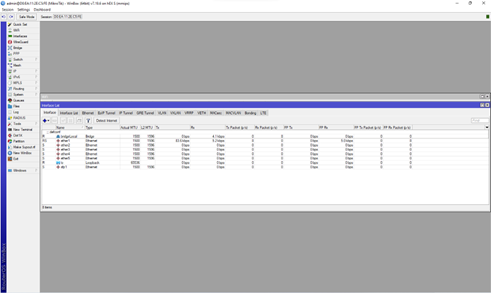
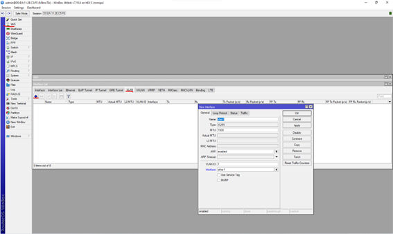
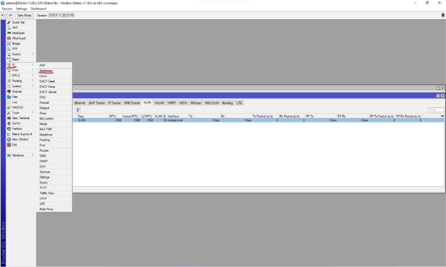
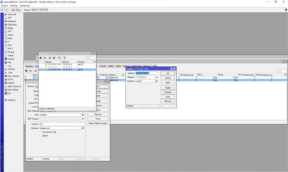
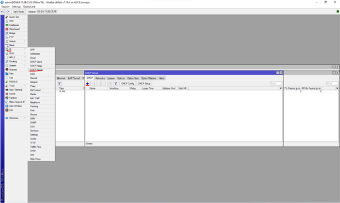
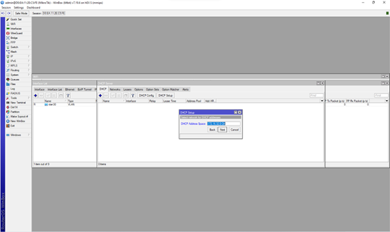
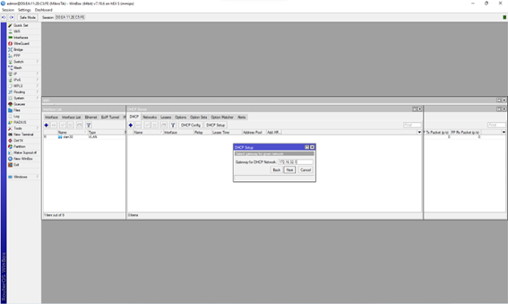
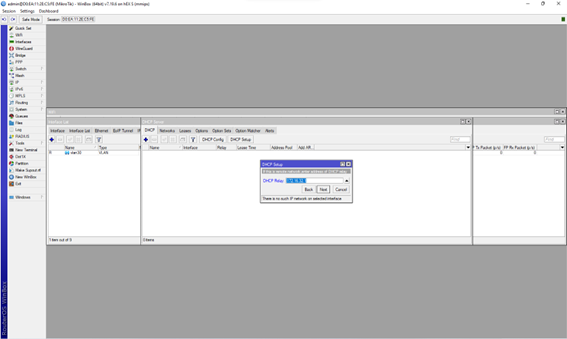
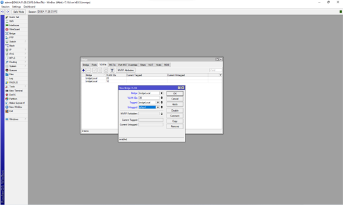

Configuración de VLANs, Router on Stick, DHCP y dispositivos de red.
Vamos a empezar creando las interfaces VLAN desde Winbox.
Para ello iremos al apartado Interfaces y después a VLAN.



Ahora vamos a asignar las direcciones IP a la VLAN, vamos a addresses al +

Vamos a configurar el servidor DHCP, vamos al apartado IP, al DHCP Server y DHCP Setup

En cada ventana vamos a ir poniendo las IP requeridas para dicho apartado



Aquí hemos puesto el DNS Server 8.8.8.8
Completamos el Least Time le ponemos 00:30:00
Despues crearemos un bridge como aparece en la siguiente captura
